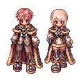

Sandbox2
  |
|---|
The Warlock (WL) is a 3rd job class and the final upgrade to Wizards. Warlocks are powerful magic damage dealers, capable of dealing heavy AoE and single target magic damage using various elements such as Fire, Water, Wind, Earth, or Ghost. Along with their damage dealing capabilities, Warlocks are also able to inflict new status alignments such as Freezing, Burning, and Stasis to weaken their enemies in battle. They also have access to a newly introduced Spellbook system that allows them to cast skills without a cast time.
Builds
Damage Dealer
TBA
Disabler
TBA
Stats
Stats
| Stat Bonus (Job Lv 60 Warlock) | |||||
|---|---|---|---|---|---|
| STR | AGI | VIT | INT | DEX | LUK |
| +1 | +7 | +6 | +13 | +8 | +2 |
STR (Strength): Increases Weight Limit and slightly reduces the duration of Sorcerers’ Vacuum Extreme debuff.
AGI (Agility): Both an offensive and a defensive stat. Raises ASPD, Animation delay and flee rate. 100 AGI gives immunity against Bleeding and Sleep statuses, also reduces the duration of Masquerades.
INT (Intelligence): Increases MATK by +1.5 per point, decreases Cast time, raises SP pool and regeneration. Also gives immunity to Silence, helps with Sleep, Deep Sleep and Oblivion Curse duration.
VIT (Vitality): Increases MaxHP, Soft DEF, and Soft MDEF. Also increases resistance against some debuffs (e.g. Stun, Poison, Burning).
DEX (Dexterity): Primary stat to reduce Cast time, also raises your ASPD and mATK by 1/5 therefore it is ideal to have your DEX at multiples of 5.
LUK (Luck): Every 3 points of LUK gives an additional +1 ATK/mATK, which makes it a very viable option to gain some mATK at later levels. Raising your INT from 120 to 130 would require you to use 340 stat points and would net you +15 mATK, while raising LUK from 1 to 30 would cost you only 86 stat points, and raise your mATK by +10. Glass Cannon and damage oriented builds usually have 30 or 60 LUK, depending on the player's taste. LUK slightly increases resistance against some debuffs and reduces the duration of debuffs (e.g. Frozen, Sleep, Stone Curse, Genetic’s Mandragora Howling).
Skills
Mage
| Skill | Type | Properties | Description |
|---|---|---|---|
 Increase SP Recovery Increase SP Recovery
|
Passive |
|
Increases SP recovery when idle by 3~30 SP every 10 seconds and increases the effectiveness of SP recovery items by 2% ~ 20% |
 Sight Sight
|
Supportive |
|
Reveals all hidden enemies in a 7x7 radius around the caster for 10 seconds |
 Napalm Beat Napalm Beat
|
Offensive |
|
Deals 80 ~ 170% MATK Ghost property damage to an enemy and 3x3 radius around them. |
 Safety Wall Safety Wall
|
Supportive |
|
Creates a barrier on the ground that blocks all melee physical attacks, lasting 5 ~ 50 seconds, or until it blocks 3 ~ 11 hits, or until it receives a hit that exceeds its durability (Caster's MaxHP * 3). Can not be cast next to Pneuma. |
 Soul Strike Soul Strike
|
Offensive |
|
Inflicts 1 ~ 5 Ghost property magic hits to a single target, each dealing 100% MATK damage. Inflicts 5~50% bonus damage against Undead enemies. |
 Cold Bolt Cold Bolt
|
Offensive |
|
Inflicts 1 ~ 10 Water property hits to the target, each dealing 100% MATK magic damage. |
 Frost Driver Frost Driver
|
Offensive |
|
Inflicts 110% ~ 200% MATK Water property magic damage to a target with a 38% ~ 65% chance to leave them frozen. Frozen enemies are immobile, unable to act and turn to Water 1 element. |
 Stone Curse Stone Curse
|
Debuff |
|
Attempts to petrify targets at a 24% ~ 60% chance. Successfully petrified targets will be unable to attack and cast skills for a few seconds, then become immobile and turn to Earth 1 element. Re-casting the skill on a succesfully petrified enemy will cancel the effect. |
 Fire Ball Fire Ball
|
Offensive |
|
Launch a Fire Ball at a target enemy, dealing 160% ~ 340% MATK Fire property magic damage in a 5x5 radius around them. |
 Fire Wall Fire Wall
|
Offensive |
|
Creates a 1x3 wall of flame on the ground for 5~14 seconds, that deals 50% Fire property magic damage for a maximum of 3~12 hits upon contact and pushes them back by 2 cells. Undead and Boss monsters take all hits at once and are not affected by the knock back of this skill. A maximum of three fire walls can be created at the same time. |
 Fire Bolt Fire Bolt
|
Offensive |
|
Inflicts 1 ~ 10 Fire property hits to the target, each dealing 100% MATK magic damage. |
 Lightning Bolt Lightning Bolt
|
Offensive |
|
Inflicts 1 ~ 10 Wind property hits to the target, each dealing 100% MATK magic damage. |
 Thunder Storm Thunder Storm
|
Offensive |
|
Calls forth a storm of lightning on a 5x5 targeted location, where all enemis will be hit by 100% MATK Wind property magic damage 1~10 times. |